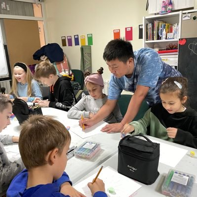

𝐀𝐬𝐡𝐥𝐞𝐲 𝐁𝐥𝐨𝐜𝐤🍥🌹🇹🇼🏳️⚧️
@bolckAshley
RT @Calebkeyi: 乌克兰顿巴斯地区的局势正变得愈发危急。我在九月份组织的华人援助活动，是与当地志愿者们共同完成的。前往村子送食物袋的整个过程可谓步步惊险，因为你得提防随时冒出来的俄罗斯无人机。

柯义在乌克兰🇺🇦
@Calebkeyi
乌克兰顿巴斯地区的局势正变得愈发危急。我在九月份组织的华人援助活动，是与当地志愿者们共同完成的。前往村子送食物袋的整个过程可谓步步惊险，因为你得提防随时冒出来的俄罗斯无人机。 https://t.co/pQ3Topp4c3